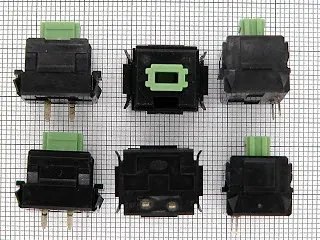

Repairing Omron and Alps buttons
Recently I had occasion to repair a Logitech wireless mouse and the keyboard of an antique from the 80's, an Apple IIc.
Both devices use mechanical switches which can be opened by releasing side latches and repaired, which is what I did. Rather than duplicating the two tutorials that I used for my repairs, I reference them in this post, with some additional background information.
Logitech Mouse: Omron microswitches
 View full-size image
View full-size imageOne of my mice, a ten year old Logitech MX 700, had a faulty left click button. Single clicks sporadically turned into double clicks, or click-holds. I took apart the mouse and saw the word "Omron" on the left click microbutton. In fact, all the buttons were Omron, and a quick search taught me that Omron switches are the most popular microswitches used in mice and probably in consumer electronics in general. Over time (say after 50,000 actuations), the thin metal strip inside the switches can sometimes succumb to metal fatigue and the button starts misbehaving.
By opening the switch and flattening the metal strip within it, you can breathe new life into the microswitch. I used this excellent set of instructions on StackExchange as my guide.
Apple IIc: Alps "complicated" button switches


View full-size imageSometime later, I purchased a vintage Apple IIc on eBay which, when it arrived, checked out to be in perfect working order, except for apparently dead "o" and "u" buttons. Suspecting that I could repair those two keys like I did the Omron mouse buttons, I researched online to learn about the keys used on those Apple systems. That research revealed that the keyboard buttons in Apple IIc were Alps "complicated" switches. Alps buttons, like Omrons, are very popular and even sought after by collectors and keyboard enthusiasts who value Alps keys for their excellent mechanical feel (search for "Dell AT 101 Keyboard", and you'll see what I mean). The "complicated" part of their description refers to the internal mechanism for the buttons which is, well, more complicated than subsequent versions of the switches which were made more cheaply with simplified mechanical internals.
Similar to Omron switches, there is a metal actuator which is attached to the button's contact plate and can, over time, lose its spring and cause the button to no longer register keystrokes. Opening the button, removing the metal actuator and bending it is usually all that's needed to revive a non-functioning Alps "complicated" key.
This informative post on the 68k Macintosh Liberation Army forums served as my Alps button repair guide.